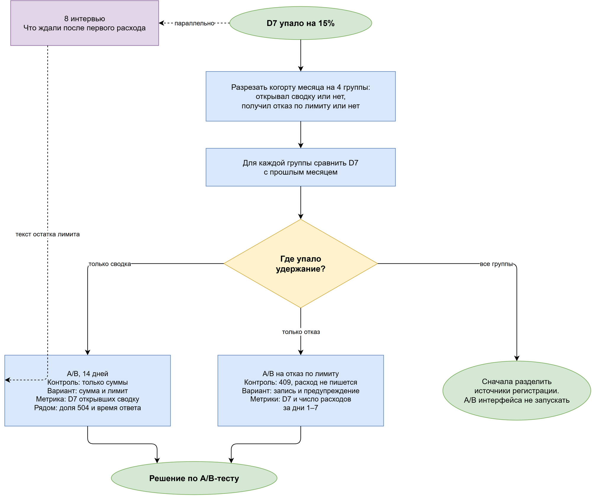

Название. Ledger, учёт личных расходов по категориям.
Ценность. Человек задаёт лимит на категорию и видит, сколько уже потратил, пока месяц ещё не закончился. Решение «можно ли ещё потратить» принимается по цифре в категории, а не по памяти.
Бизнес-модель. Фримиум-подписка. Бесплатно доступны бюджет и список расходов. Подписка открывает сводку за выбранный период и историю старше текущего месяца. Деньги приходят от тех, кто уже ведёт категории и хочет смотреть их пачкой, а не от показа рекламы.
Аудитория. Взрослые 20–40 лет, которые сами записывают траты по категориям вроде «еда», «транспорт», «жильё» и держат на них месячный лимит. Это один человек или пара с общим бюджетом. Бухгалтерия компаний и люди, которым нужен только банковский баланс, в аудиторию не входят.
| Этап | Бизнес-цель | Ключевая метрика | Почему эта метрика и как её измерять |
|---|---|---|---|
| Acquisition (Привлечение) | Привести людей, которые уже делят траты на категории и готовы записать первый расход | 1. Новые регистрации за неделю. 2. Доля регистраций с источником «прямой заход» или «приглашение», без платной рекламы | Объём регистраций показывает, растёт ли верх воронки. Доля без рекламы показывает, приходят ли люди из-за самого учёта. Событие signup, поле source. |
| Activation (Активация) | Пользователь отслеживает расход на фоне своего лимита | 1. Доля новых пользователей, которые за 24 часа создали бюджет и внесли расход в ту же категорию. 2. Медианное время от регистрации до этой пары действий | События set_budget и add_transaction с одной и той же category внутри 24 часов от signup. Медиана считается только по тем, кто сделал пару «лимит + расход в той же категории» |
| Retention (Удержание) | Запись расходов становится еженедельным действием | 1. Удержание на 7-й день: активированный пользователь вернулся и внёс расход. 2. Число расходов на такого пользователя за дни 1–7 | День 7 отделяет тех, кто попробовал форму, от тех, кто ведёт учёт. Частота за неделю показывает, что лимит обновляется новыми тратами. Когорта по дате активации, событие add_transaction в календарный день 7 |
| Revenue (Доход) | Регулярная сверка с лимитом переходит в оплату сводки и длинной истории | 1. Конверсия из активированных в платную подписку за 30 дней. 2. MRR | Подписка продаёт сводку и историю тех же категорий. Конверсия связывает бесплатный учёт с оплатой. MRR показывает, держится ли эта оплата. Событие payment_succeeded, сумма активных подписок на конец месяца |
| Referral (Поделиться) | Пользователь зовёт того, с кем делит бюджет | 1. Приглашения на одного платящего пользователя в месяц. 2. Доля новых регистраций с referrer_id | Общий бюджет естественнее всего передать второму человеку в паре. Приглашение дешевле рекламного привлечения и приводит человека в тот же сценарий категорий. Событие invite_sent и поле referrer_id у signup |
Все метрики в таблице количественные: их можно посчитать по событиям.
После активации можно один раз спросить: «Понятно ли, сколько осталось до лимита?». Человек отвечает «да» или «нет» и при желании дописывает фразу своими словами. По ответу видно, прочитал ли он остаток так, как задумано. Долю активации по-прежнему считают по бюджету и расходу.
Активация наступает в момент, когда у категории есть лимит и в ней лежит хотя бы один расход. Это происходит в первые 24 часа после регистрации.
Aha-момент наступает, когда человек видит эту пару вместе: лимит 5000 по «еде» и расход 450 в той же категории. До этого Ledger выглядит как форма. После этого видно, что лимит ещё не выбран и куда ушла сумма.
Одного бюджета без расхода недостаточно: сравнивать нечего. Одного расхода без лимита недостаточно: сумма ни к чему не привязана.
Северная звезда: число расходов за неделю, внесённых в категорию, где уже задан лимит.
Это одно действие, в котором собрана ценность продукта. Рост метрики при той же базе пользователей означает, что люди продолжают сверять траты с лимитом. Падение означает, что учёт остановился, даже если регистрации и оплаты за прошлый месяц ещё выглядят нормально.
Бесплатный контур доводит человека до северной звезды: бюджет и расходы. Платный контур продаёт сводку этих же расходов за период и историю старше месяца. Привлечение без активации не создаёт повод платить. Активация без удержания даёт одну запись и не создаёт историю, за которую платят. Приглашение имеет смысл после того, как первый человек уже ведёт категории: второй приходит в тот же бюджет, а не в пустое приложение.
За последний месяц удержание на 7-й день упало на 15%. Активация в этой задаче не менялась: люди по-прежнему создают бюджет и первый расход. Теряется возврат на седьмой день.
AddTransaction возвращает budget exceeded и не сохраняет расход. Человек, который упёрся в лимит в первые дни, не может записать следующую трату и перестаёт открывать приложение.Мы считаем, что падение удержания на 7-й день на 15% связано с тем, что сводка показывает сумму категории и не показывает лимит. Если рядом с суммой появится остаток до лимита, удержание на 7-й день у пользователей, открывших отчёт в первую неделю, вырастет на 5 процентных пунктов.
Мы считаем, что падение удержания на 7-й день связано с отказом записать расход при превышении лимита. Если вместо отказа сохранять расход и показывать предупреждение, что лимит превышен, удержание на 7-й день у тех, кто получил этот отказ в первые 3 дня, вырастет на 8 процентных пунктов.

Сначала разрезать уже собранную когорту последнего месяца на четыре группы: открывал сводку или нет, получал отказ по лимиту или нет. Для каждой группы посчитать удержание на 7-й день и сравнить с предыдущим месяцем. Падение только у тех, кто открывал сводку, поддерживает первую гипотезу. Падение только у тех, кто получил отказ по лимиту, поддерживает вторую. Падение во всех группах сразу указывает на смену состава аудитории, и тогда A/B-тест интерфейса не нужен, пока не разделены источники регистрации.
Первую гипотезу проверять A/B-тестом 14 дней, половина новых пользователей в каждой группе. Контроль видит текущую сводку, суммы по категориям. Вариант видит сумму и лимит категории. Основная метрика: удержание на 7-й день среди тех, кто открыл сводку. Рядом смотреть долю ответов 504 и время ответа сводки, чтобы не принять таймаут за эффект интерфейса.
Вторую гипотезу проверять отдельным A/B-тестом на тех, кто в первые 3 дня пытается записать расход сверх лимита. Контроль получает нынешний отказ без записи. Вариант сохраняет расход и видит предупреждение. Метрики: удержание на 7-й день в этой группе и число расходов на пользователя за дни 1–7.
Параллельно провести 8 интервью с людьми, которые активировались и не вернулись на 7-й день. Вопрос один: что они ожидали увидеть после первого расхода. Интервью нужно, чтобы сформулировать текст остатка лимита. Решение, подтвердилась ли гипотеза, принимается по A/B-тесту, не по интервью.